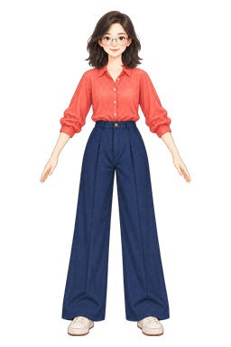
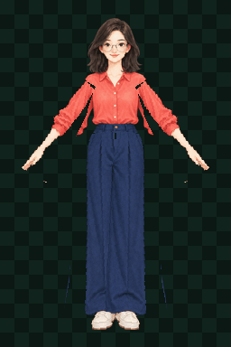
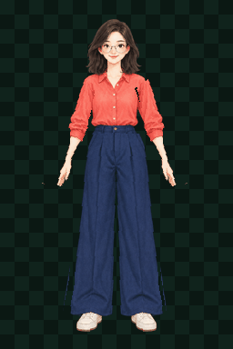

按 idle / run / cast 状态加载。
PLAYABLE CAPABILITY PROOF / REVISION 06
旧站能力试运行
恢复 Rig 后部署林简动作投影，用真实 run / cast 帧协同穿越三段旧站，再完成 QA、Export 与最终信标。
BRIEFING
先与林简建立连接
LIN ─ RIG ─ QA ─ EXPORT ─ BEACON
INTEGRITY● ● ● ●
MODULES0 / 3
FAULTS5
LIN JIAN / IDLE · RUN · CAST
native idle + versioned rig actions
E交互
SYSTEM
沿站台向右，找到林简。W / ↑ 跳跃，J / F 发射脉冲。
真实证据说明。



保留 Revision 5 的四张 native idle 证据
- INPUT
- motion-ready RGBA master
- METHOD
- versioned deterministic Rig
- OUTPUT
- idle 4 · run 4 · cast 5
- VERDICT
- CONDITIONAL / demo-ready
边界：run-v2 仍是宽裤腿区域旋转，不是已验证的髋—膝—踝骨链；可用于本关卡的小比例动作投影，不批准为生产级 locomotion。
NATIVE-V194/ 100
边界：这些是像素诊断，用于发现漂移、断帧和透明问题；它们不是审美模型，也不能单独批准 walk / run。
MULTI-ACTION EXTENSION9 / 9 UNIQUE FRAMES
最少 93.962% 可见像素保持母版精确 RGBA；旋转边缘产生少量混合色，因此不宣称 100% 调色板恒等。
ANIMATION MANIFEST
{
"asset": "lin-jian-motion-r1",
"states": {
"idle": [4, 6, true],
"run": [4, 10, true],
"cast": [5, 12, false]
},
"finish": "versioned-rig",
"qa": "conditional"
}游戏只选择状态，不生成角色像素。
v1 被保留，v2 不覆盖旧输出。
CAPABILITY RUN COMPLETE
旧站资产链已经上线
Sprite Studio 提供可复现的 idle / run / cast 角色帧、QA 与导出合同；镜头、跟随、物理、伤害、敌人和任务状态由游戏运行时负责。
RIG ONLINEQA ONLINEEXPORT ONLINE
CONNECTION LOST探索器完整度归零
能力终端进度已保留，从最近检查点恢复。
CANVAS UNAVAILABLE场景无法渲染，能力证据仍可阅读。
RIG QA EXPORT
idle 4 帧、run 4 帧、cast 5 帧，均为可追溯本地输出。
旧 idle overall 94；新增动作 9 / 9 帧唯一，结论仍为 conditional。
透明 PNG、动作状态、FPS、循环、版本与 provenance 组成游戏交付合同。
游戏已开始。向右移动寻找林简。
WHAT THE LIBRARY CONTRIBUTES
三个终端不是装饰，而是三种可交付能力。
原始 idle 保持 native 证据；motion-ready 母版再生成两组版本化动作，Rig 终端上线后直接部署到关卡。
三次真实门禁才通过；94 分诊断像素，不把它说成审美或动作语义保证。
帧、FPS、循环、pivot、版本和来源一起进入游戏，而不是复制一张不可追踪图片。